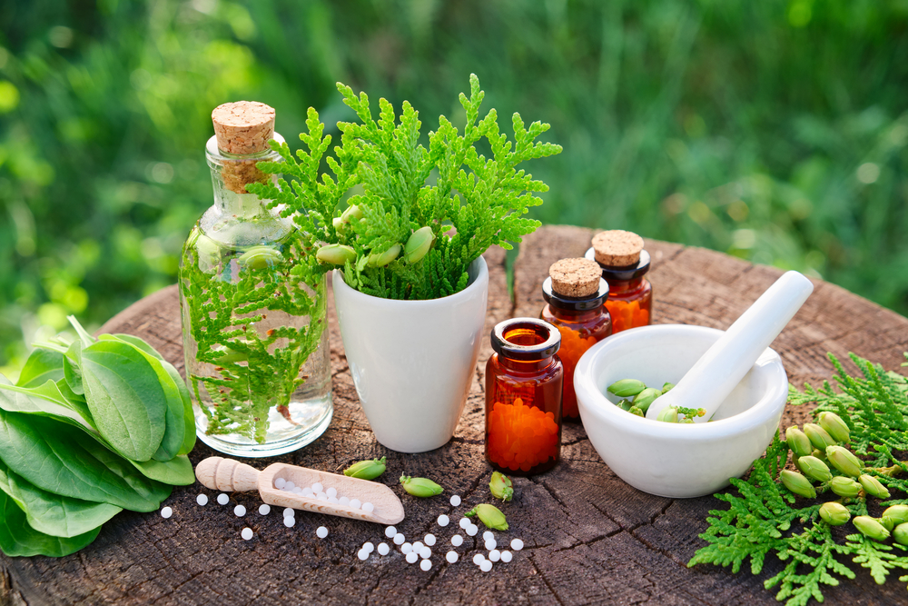

Naturopathe et praticienne de la méthode BBA "Bye Bye Allergies", je propose mes conseils et pratiques afin de vous accompagner vers une meilleure santé tant physique que morale ou encore énergétique !
La naturopathie est un ensemble de conseils d'hygiène vitale, de rééquilibrage alimentaire, de phyto-aromathérapie…etc. afin de garder ou bien de retrouver une bonne santé.

La méthode BBA est une technique douce, naturelle et énergétique et sans danger pour venir à bout des allergies, des intolérances et d’autres sensibilités.